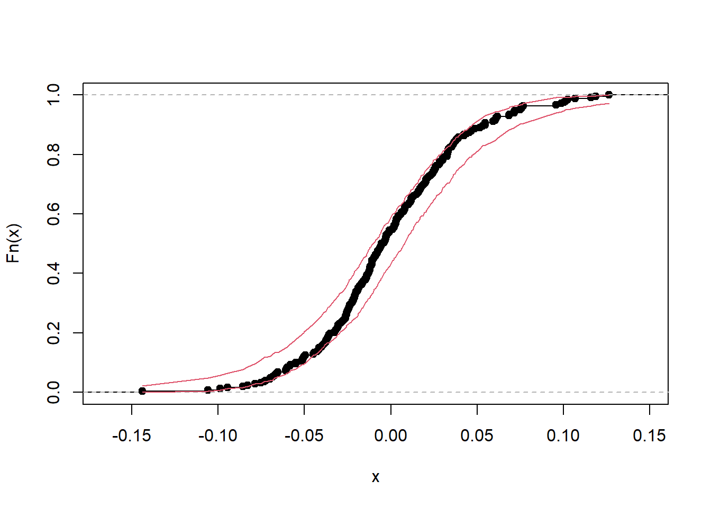

Dizemos que a função densidade/probabilidade de \(X\sim f(.)\) é uma mistura de distribuições se existe uma variável \(Z\) tal que
\[f(x)=\int f(x|z)f(z)dz.\]
A variável \(Z\) é denominada latente e a função \(f(x,z)\) é denominada modelo aumentado.
Seja \((X_1,Z_1),\ldots,(X_n,Z_n)\) uma amostra aleatória do modelo aumentado \(f(x,z|\theta)\) e seja \(f(\theta)\) a priori para \(\theta\). Existem situações nas quais é mais fácil simular da distribuição do modelo \[f(\theta,\boldsymbol{z}|\boldsymbol{x})\varpropto f(\boldsymbol{x},\boldsymbol{z}|\theta)f(\theta).\]
Em particular, se é fácil simular das condicionais completas, podemos utilizar o Amostrador de Gibbs, que consiste no seguinte algoritmo.
Amostrador de Gibbs
Inicie a cadeia com fazendo \(j=0\) e escolhendo \(\theta^{(0)}\)
O Amostrador de Gibbs é uma cadeia de Markov cuja distribuição estacionária é \(f(\theta,\boldsymbol{z}|\boldsymbol{x})\)
14.1 O modelo t-Student como uma mistura normal-gama
A função densidade do modelo t-Student é dada por \[f(x|\mu,\phi,\nu)=\frac{\Gamma(\frac{\nu+1}{2})}{\Gamma(\frac{\nu}{2})}\sqrt{\frac{\phi}{\pi\nu}}\left[1+\frac{\phi}{\nu}\left(x-\mu\right)^2\right]^{-\frac{\nu+1}{2}},\] onde \(x,\mu\in\mathbb{R}\) e \(\phi,\nu>0\). Se \(\nu>1\), então \(E(X)=\mu\) e se \(\nu>2\), \(Var(X)=\nu/(\phi(\nu-2))\).
Considere que \(X|Z,\mu,\phi\sim\hbox{Normal}(\mu,(z\phi)^{-1})\) e \(Z\sim\hbox{Gama}(\nu/2,\nu/2)\). Então
Considerando que \(\mu|\phi \sim\hbox{Normal}(m,(\lambda\phi)^{-1})\), \(\phi\sim\hbox{Gama}(n_0/2,s_0/2)\) temos a seguinte posteriori baseada no modelo aumentado:
\[f(\mu,\phi,\nu|\boldsymbol{x})\propto \left[\prod_{i=1}^n \sqrt{\frac{\phi z_i}{2\pi}}e^{-\frac{z_i\phi}{2}(x_i-\mu)^2}\frac{(\nu/2)^{\nu/2}}{\Gamma(\nu/2)}z_i^{\frac{\nu}{2}-1}e^{-\frac{\nu}{2}z_i}\right]\times \phi^{1/2}e^{-\frac{\lambda}{2} \phi(\mu-m)^2}\times\phi^{\frac{n_0}{2}-1}e^{-\frac{s_0}{2}\phi}\times f(\nu)\] Pode-se mostrar que
A condicional completa para \(\nu\) é dada por \[f(\nu|\hbox{resto})\propto \frac{(\nu/2)^{n\nu/2}}{\Gamma(\nu/2)^n}\left(\prod_{i=1}^n z_i\right)^{\frac{\nu}{2}-1}e^{-\frac{\nu}{2}\sum_{i=1}^nz_i}f(\nu)\]
Observe que a condicional completa para \(\nu\) não possui um núcleo conhecido. Para facilitar a simulação, podemos considerar que o espaço paramétrico de \(\nu\) é uma coleção com \(M<\infty\) pontos. Então, teremos que \[f(\nu_0|\hbox{resto})\approx P(\nu=\nu_0|\hbox{resto})\propto \frac{(\nu_0/2)^{n\nu_0/2}}{\Gamma(\nu_0/2)^n}\left(\prod_{i=1}^n z_i\right)^{\frac{\nu_0}{2}-1}e^{-\frac{\nu}{2}\sum_{i=1}^nz_i}f(\nu_0)\] e podemos utilizar o simulador sample do R. Estudos sugerem que a priori escolhida deve favorecer valores baixos para \(\nu\). Vamos utilizar a priori \(\nu\sim\hbox{Exponencial}(r_0)\)
Volatilidade no mercado financeiro
Considere que você tem uma empresa e deseja atrair investimento. Um modo bastante tradicional é encontrar um sócio para injetar dinheiro. Por sua vez, o sócio passa a ser dono de parte da empresa. Essa é a ideia por trás das ações. Parte da empresa é fatiada em partes denominadas ações, que são negociadas na bolsa de valores. Qualquer indivíduo com uma ação é dono de uma fração da empresa. Se a empresa cresce, seu valor cresce e aquela fração correspondente à ação passa a valer mais. Se a empresa entre em crise, ação passa a valer menos.
Contudo, o preço não está baseado apenas no quanto a empresa vale no momento, mas como os milhares de donos estão se sentindo no momento com relação à ela. Caso os acionistas acreditem que a empresa vai perder valor, eles podem começar a vender suas ações. Com o aumento oferta, o preço cai. Se por outro lado o mercado acredita que a empresa vai aumentar seu lucro, os pedidos por compra no mercado aumentam e os donos das ações evitam negociá-las, criando uma demanada maior que a oferta e aumentando o preço do ativo.
Portanto, o preço das ações está associado às oscilações de humor do mercado. Neste sentido, a variabilidade do preço é uma medida fundamental e é denominada volatilidade.
Existem várias maneiras de medir a volatilidade. Para o nosso exemplo, seja \(p_t\) o preço de fechamento da ação no dia \(t\). Calculamos o log retorno da ação no dia \(t\) como
\[x_t=\log(p_t)-\log(p_{t-1}).\] O cálculo do log-retorno é útil para remover a tendência do preço. Isso ocorre porque a tendência de \(\log(p_t)\) tende a ser localmente linear. Desse modo, é esperado que \(E(x_t)\) esteja próximo de zero. É importante saber que, embora \(x_1,\ldots,x_n\) sejam não correlacionados, em geral eles são dependentes e não são identicamente distribuídos. Contudo, mesmo que \(x_1,\ldots,x_n\) sejam dependentes e não identicamente distribuídos, o modelo t-Student costuma apresentar um bom ajuste, especialmente devido à sua capacidade de capturar caudas pesadas.
Para o mercado financeiro, o desvio padrão do log retorno é denominado volatidade (ou volatilidade total), ou seja,
\[\hbox{volatidade}=\sigma\sqrt{\frac{\nu}{\nu-2}}\] O parâmetro \(\sigma=1/\sqrt{\phi}\) da distribuição \(t\)-Student é interpretado como volatilidade basal ou o fator de escala da dispersão dos retornos. Ele representa a magnitude “típica” das flutuações, enquanto o parâmetro \(\nu\) informa sobre a frequência e a intensidade dos eventos de cauda (denominados “shocks”, no jargão do mercado).
Um \(\sigma\) maior significa que, mesmo sem considerar as caudas, os retornos tendem a se espalhar mais. Quando combinado com um \(\nu\) baixo, isso indica um ativo que não só tem flutuações grandes, mas também é propenso a flutuações muito grandes e muito pequenas com maior frequência.
Vamos analisar os log-retornos diários da Magazine Luiza (MGLU) entre 06/06/2024 e 04/06/2025
Vamos estimar a volatilidade basal e os graus de liberdade para estes dados. Vamos considerar \(\lambda=n_0=s_0=0,01\), \(r_0=1\) e \(m=0\). Para os valores possíveis dos graus de liberdade, vamos considerar os conjunto \(\{0.5, 0.75, 1, 1.25,\ldots,40\}\).
x = magalun =length(x)B =5000# valores possiveis para nunu_seq =seq(.5,40,.25)# hiperparâmetrosl = .01m =0n0 =0.01s0 =0.01r0 =1# valores iniciaisnu = .5mu =0z =rep(1,n) phi =1for(i in1:B){# mu dado o resto media = (sum(z*x)+l*m)/( l +sum(z)) desvio =1/sqrt(phi[i]*( l +sum(z))) mu[i+1] =rnorm(1, media, desvio )# phi dado o resto alfa = (n+n0+1)/2 beta = .5*( s0 + l*(mu[i+1] - m)^2+sum( (x-mu[i+1])^2 ) ) phi[i+1] =rgamma(1, alfa, beta)# z_i dado o resto alfa = .5*(nu[i]+1) beta = .5*(phi[i+1]*(x-mu[i+1])^2+ nu[i]) z =rgamma(n, alfa, beta )# nu dado o resto log_p = .5*n*nu_seq*log(nu_seq/2) - n*lgamma(nu_seq/2)+.5*nu_seq*sum(log(z))-.5*nu_seq*sum(z)- nu_seq*r0 nu[i+1] =sample(nu_seq,1,T,exp(log_p-max(log_p)))}mu_magalu = mu[seq(B/2,B,15)]nu_magalu = nu[seq(B/2,B,15)]vol_magalu =1/sqrt(phi[seq(B/2,B,15)])
Abaixo, apresentamos os traços e a autocorrelação para as amostros da posteriori para \(\nu\) e \(\sigma=1/\sqrt{\phi}\), após o burn-in e o \(thinning\).
oo =par( mfrow=c(2,2))ts.plot(nu_magalu, main='Traço para os graus de liberdade')acf(nu_magalu, main='Autocorrelação para os graus de liberdade')ts.plot(vol_magalu, main='Traço para a volatilidade')acf(vol_magalu, main='Autocorrelação para a volatilidade')
par(oo)
Com a amostra a posteriori simulada, podemos simular amostras da preditiva a posteriori. Podemos então construir um intervalo de predição para a função de distribuição empírica da preditiva a posteriori e compará-lo com a distribuição empírica dos dados. O gráfico abaixo mostra que o modelo é adequado.
y_pred <-array(NA_real_, c(length((nu_magalu)), n))for(i in1:length((nu_magalu))){ y_pred[i,] <- mu_magalu[i] +rt(n, nu_magalu[i])*vol_magalu[i]}Fd_sim =apply(y_pred,1, function(y){ Fd =ecdf(y)Fd(sort(x))})qq =apply(Fd_sim,1, function(x) quantile(x,c(.025,.977)))plot(ecdf(x), main ='')lines(sort(x),qq[1,], col =2)lines(sort(x),qq[2,], col =2)

Portanto, temos que a volatilidade basal estimada para o log-retorno diário da Magazine Luiza durente o intervalo de estudo foi 0,04 (ou 4%), o que é considerado elevado. Os graus de liberdade foram estimados em 7,3. Este resultado era esperado, pois o setor varejista de e-commerce está sujeito as oscilações de taxas de juros, inflação, poder de compra do consumidor. Além disso, pode-se somar a forte concorrência e o endividamento atual da empresa
mean(vol_magalu)
[1] 0.04370491
Para ilustrar melhor estes conceitos, vamos repetir a análise para a empresa Engie Brasil Energia (EGIE3). Espera-se menos volatilidade, uma vez que empresas do setor elétrico geralmente têm receitas mais previsíveis, regulamentação estável e são consideradas “defensivas”.
A volatilidade basal estimada para a EGIE no período foi de 1,2%. A probabilidade de que esta volatilidade seja menor que a da MGLU é de 0,999, o que corrobora com o esperado. Os graus de liberdade foram estimados em 8,07.
A distribuição t-Student multivariada e o estudo de portifólios
Um portfólio, no contexto financeiro, é um conjunto de investimentos que um indivíduo ou uma instituição possui. Alguns investimentos tendem a reagir de forma semelhante aos humeores do mercado. Por exemplo, considerando os log-retornos diários do Banco do Brasil (BBSA3) e Itaú Unibanco (ITUB4) no ano de 2024, temos uma correlação de 0,18. Portanto, se dois ativos dentro do portifólio são correlacionados, o risco deveria aumentar.
Podemos relacionar a distribuição t-Student\(_{\nu}(\boldsymbol{\mu},\Phi^{-1})\) (\(p\) multivariada) como a seguinte mistura:
\[\begin{align}\boldsymbol{x}|z,\boldsymbol{\mu},\Phi&\sim \hbox{Normal}_p(\boldsymbol{\mu},z^{-1}\Phi^{-1})\\z&\sim\hbox{Gama}\left(\frac{\nu}{2},\frac{\nu}{2}\right)\end{align}\] Considerando uma amostra \(\boldsymbol{x}_1,\ldots,\boldsymbol{x}_n\) eas prioris \(\boldsymbol{\mu}|\Phi\sim\hbox{Normal}_p(\boldsymbol{m}_0,\lambda^{-1}\Phi^{-1})\), \(\Phi\sim\hbox{Wishart}(n_0,S_0)\) e \(\nu\sim\hbox{Exponencial}(r_0)\), temos as seguintes condicionais completas:
Seja \(p\) o número de ações dentro do portifólio e seja \(w_i\) a proporção da \(i\)-ésima ação dentro do portifólio. Então \(\Phi\) pode ser utilizada para os seguintes fins:
Cálculo do portifólio ótimo: a melhor composição da proporção das ações dentro do portifólio é dada por
\[\boldsymbol{w}=\Phi\boldsymbol{1}_p\] e a respectiva volatilidade por portifólio é dada por \[\sigma_p=\sqrt{\textbf{1}_p'\Phi \textbf{1}_p}\]
Relação entre ações: uma estratégia protetiva é a diversificação de ativos. Isto porque ativos diversos tendem a se comportar de modo diferente com os humores do mercado, protegendo o capital de eventuais crises. um grafo de dependências condicionais utilizando \(\Phi\) pode ser contruído para verificar a denpendência entre as ações. Isto é útil para proteção de capital.
14.2 Modelos com inflação de zeros
Quando são observados mais zeros do que o esperado pelo modelo de contagem assumido para a verossimilhança, é usual considerar um modelo com inflação de zeros. Nesse tipo de modelo, assumimos que existe uma variável \(Z|p\sim\hbox{Bernoulli}(\rho)\) tal que:
\[X=\left\{\begin{array}{ll}0, & \hbox{se }Z=1\ \\ Y,&\hbox{se }Z=0\end{array}\right.\] onde \(Y\sim h(.|\theta)\) é o modelo de contagem. Apenas \(X\) é observado e, como
\[\begin{align}P(X=0|\theta,p)&=P(X=0|Z=0,\theta)P(Z=0|\rho)+P(X=0|Z=1,\theta)P(Z=1|\rho)\\&=(1-\rho)h(0|\theta)+\rho\end{align}\] a probabilidade de observar um zero está entre \(h(0|\theta)\) e 1, o que caracteriza a inflação.
Agora, considere um modelo inflacionado de zeros aumentado:
\[f(x,z|\theta,\rho)=f(x|z,\theta)f(z|\rho)=f(x|z,\theta)\rho^z(1-\rho)^{1-z}.\] Note que
\[f(x|z,\theta)=\left\{
\begin{array}{ll}
h(x|\theta),&\hbox{ se }z=0,\\
I(x=0),&\hbox{ se }z=1\\
\end{array}\right.\] logo, a distribuição conjunta \(f(x,z|\theta,\rho)\) é dada por
Considere, a priori, que \(\theta\) e \(\rho\) são independentes. Seja \(\pi(\theta)\) a priori para \(\theta\) e considere que \(\rho\sim\hbox{Beta}(a,b)\). Então, as condicionais completas para \(\theta\) e \(\rho\) são
Para a condicional completa de \(z_i\), notemos que \[P(Z_i=1|x_i>0)=\frac{P(Z_i=1,X_i>0)}{P(X_i>0)}=0,\] e que
\[P(Z_i=z|x_i=0)= \left\{\begin{array}{ll}\frac{P(Z_i=0,X_i=0)}{P(X_i=0)}=\frac{h(0|\theta)(1-\rho)}{\rho+(1-\rho)h(0|\theta)},&,z=0\\
\frac{P(Z_i=1,X_i=0)}{P(X_i=0)}=\frac{\rho}{\rho+(1-\rho)h(0|\theta)},&z=1\end{array}\right.,\] logo \[\pi(z_i|\theta,\rho,\boldsymbol{x},\boldsymbol{z}_{(-i)})=\left\{\begin{array}{ll}\hbox{Bernoulli}\left( \frac{\rho}{\rho+(1-\rho)h(0|\theta)}\right),&\hbox{ se }x_i=0\\
I(z_i=0),&\hbox{ se } x_i>0\\ \end{array}\right.\]
Portanto, um amostrador de Gibbs para um modelo inflacionado de zeros é
Amostrador de Gibbs para o modelo inflado de zeros
Faça \(j=0\) e dê os valores iniciais \(\theta^{(0)}\) e \(\rho^{(0)}\).
No \(j\)-ésimo passo:
Para \(i\in\{1,\ldots,n\}\), se \(x_i>0\) faça \(z_i=0\). Senão, simule \[z_i^{(j)}\sim \hbox{Bernoulli}\left(\frac{\rho^{(j-1)}}{\rho^{(j-1)}+(1-\rho^{(j-1)})h(x_i|\theta^{(j-1)})}\right)\]
Cada função \(f(.|\boldsymbol{\theta}_k)\) é denominada componente da mistura e o número de componentes pode ser desconhecido.
Assim como o modelo com zeros inflacionados, podemos utilizar uma variável latente \(\textbf{z}_i|\kappa=(z_{i,1},\ldots,z_{i,\kappa})\sim\hbox{Multinomial}(p_1\ldots,p_\kappa|\sum_{k=1}^\kappa z_{ik}=1)\), obtendo o seguinte modelo aumentado
Considere as prioris \(\pi(\boldsymbol{\theta}|\kappa)=\prod_{k=1}^\kappa \pi(\boldsymbol{\theta}_k)\) e \(\textbf{p}|\kappa\sim\hbox{Dirichlet}(a_1,\ldots,a_\kappa)\), onde \[f(\textbf{p}|\kappa)\propto \prod_{k=1}^\kappa p_k^{a_k-1}\] com \(\sum_{k=1}^\kappa p_k=1\). As condicionais completas para este problema são
\(\begin{align}f(\textbf{z}_i|resto)\propto \prod_{k=1}^\kappa \left[p_kf(x_i|\boldsymbol{\theta}_k)\right]^{z_{i,k}}\end{align}\) ou seja, \(\textbf{z}_i|rest\sim\hbox{Multinomial}(\tilde{p}_1,\ldots,\tilde{p}_\kappa)\), onde
\[\tilde{p}_k=\frac{p_kf(x_i|\boldsymbol{\theta}_k)}{\sum_{k=1}^\kappa p_kf(x_i|\boldsymbol{\theta}_k)}\] * \(f(\textbf{p}|resto)\propto \prod_{k=1}^\kappa p_k^{\sum_{i=1}^n z_{i,k}+a_k-1}\), ou seja \(\textbf{p}|resto\sim\hbox{Dirichlet}(a_1+\sum_{i=1}^n z_{i,1},\ldots,a_\kappa+\sum_{i=1}^n z_{i,\kappa})\)
Se necessário, podemos atrbuir a priori \[\pi(\kappa)=\frac{1}{M},\kappa=1,2,\ldots,M\] para obter a condicional completa \[\pi(\kappa|resto)=\frac{\prod_{i=1}^n\prod_{k=1}^\kappa f(x_i|\boldsymbol{\theta}_k)^{z_{i,k}}\pi(\boldsymbol{\theta}_k)\pi(\textbf{p}|\kappa)\pi(\textbf{z}_i|\kappa)}{\sum_{\kappa=1}^M \prod_{i=1}^n\prod_{k=1}^\kappa f(x_i|\boldsymbol{\theta}_k)^{z_{i,k}}\pi(\boldsymbol{\theta}_k)\pi(\textbf{p}|\kappa)\pi(\textbf{z}_i|\kappa)},\kappa=1,\ldots,M.\]
14.4.1 O velho fiel
O banco de dados faithful mostra a duração e o tempo até a próxima erupção do geiser Velho Fiel, no parque Yellowstone. Abaixo mostramos o diagrama do tempo de espera entre erupções
hist(faithful$waiting)
É possível notar classes, uma com tempo e entre erupções menor que 70 com tempo maior. Temos as seguintes estimativas iniciais:
## elementos na classe 1x <- faithful$waitingz <- x <70# proporção na classe 1mean(z)
[1] 0.3786765
# média e desvio padrão na classe 1mean( x[z])
[1] 55.15534
sd( x[z])
[1] 6.266558
## elementos na classe 2# proporção na classe 2mean(z==F)
[1] 0.6213235
# média e desvio padrão na classe 2mean( x[z==F])
[1] 80.49112
sd( x[z==F])
[1] 5.456667
Vamos considerar que as duas componentes possuem distribuição normal. Para cada componente, teremos as seguintes prioris:
O modelo aumentado é \[f(x_i|\mu,\phi,z_{i})=\left[\frac{\phi_1^{1/2}}{\sqrt{2\pi}}e^{-\frac{\phi_1}{2}(x_i-\mu_1)}\right]^{z_i}\left[\frac{\phi_2^{1/2}}{\sqrt{2\pi}}e^{-\frac{\phi_2}{2}(x_i-\mu_2)}\right]^{1-z_i}\] As condicionais completas são:
B <-50000# hiperparmametrosm1 <-65m2 <-80C <-1000r=4; s =6a =1; b = .1# valores iniciaisz <- x <70phi1 <-1/36phi2 <-1/25mu1 = mu2 = p =NULLfor(i in1:B){# mu dado o resto m1_post <- ( sum(x*z) + m1/C) / ( sum(z) +1/C ) m2_post <- ( sum(x*(1-z)) + m1/C) / ( sum(1-z) +1/C ) s1_post <-1/ ( ( sum(z) +1/C )*phi1[i] ) s2_post <-1/ ( ( sum(1-z) +1/C )*phi2[i] ) mu1[i+1] <-rnorm(1, m1_post, sqrt( s1_post) ) mu2[i+1] <-rnorm(1, m2_post, sqrt( s2_post) )# phi dado resto phi1[i+1] <-rgamma(1, 1+ a +sum(z), sum( z*(x - mu1[i+1])^2 ) + (mu1[i+1]-m1)^2+ b) phi2[i+1] <-rgamma(1, 1+ a +sum(1-z), sum( (1-z)*(x - mu2[i+1])^2 ) + (mu2[i+1]-m2)^2+ b)# p dado resto p[i+1] <-rbeta(1, r +sum(z), s +sum(1-z) )# z dado resto aux1 <- p[i+1]*dnorm(x,mu1[i+1], 1/sqrt(phi1[i+1])) aux2 <- (1-p[i+1])*dnorm(x,mu2[i+1], 1/sqrt(phi2[i+1])) z <-rbinom(length(x), 1, aux1/( aux1 + aux2))}#
hist(mu1[seq(B/2,B,30)])
hist(mu2[seq(B/2,B,30)])
14.5 Exercícios
14.5.1 Volatilidade individual das ações da B3
As ações são divididas por segmentos. Abaixo mostramos os segmentos e suas principais ações na bolsa brasileira.
Anexando pacote: 'dplyr'
Os seguintes objetos são mascarados por 'package:stats':
filter, lag
Os seguintes objetos são mascarados por 'package:base':
intersect, setdiff, setequal, union
Anexando pacote: 'kableExtra'
O seguinte objeto é mascarado por 'package:dplyr':
group_rows
Principais Ações da B3 por Setor
Setor
Ação
Ticker
Bens Industriais
Bens Industriais
CCR
CCRO3
Bens Industriais
Grupo Vamos
VAMO3
Bens Industriais
Indústrias Romi
ROMI3
Bens Industriais
Rumo
RAIL3
Bens Industriais
Weg
WEGE3
Comunicações
Comunicações
Brisanet
BRIT3
Comunicações
Oi
OIBR3
Comunicações
Telefônica Brasil
VIVT3
Comunicações
Tim
TIMS3
Comunicações
Unifique
FIQE3
Consumo Cíclico
Consumo Cíclico
CVC Brasil
CVCB3
Consumo Cíclico
Embraer
EMBR3
Consumo Cíclico
Localiza
RENT3
Consumo Cíclico
Lojas Renner
LREN3
Consumo Cíclico
Magazine Luiza
MGLU3
Consumo Não Cíclico
Consumo Não Cíclico
Ambev
ABEV3
Consumo Não Cíclico
Assaí
ASAI3
Consumo Não Cíclico
Hypera Pharma
HYPE3
Consumo Não Cíclico
JBS
JBS3
Consumo Não Cíclico
Raia Drogasil
RADL3
Financeiro
Financeiro
B3
B3SA3
Financeiro
Banco do Brasil
BBAS3
Financeiro
Bradesco
BBDC4
Financeiro
Itaú Unibanco
ITUB4
Financeiro
Itaúsa
ITSA4
Materiais Básicos
Materiais Básicos
CSN
CSNA3
Materiais Básicos
Gerdau
GGBR4
Materiais Básicos
Klabin
KLBN11
Materiais Básicos
Suzano
SUZB3
Materiais Básicos
Vale
VALE3
Petróleo, Gás e Biocombustíveis
Petróleo, Gás e Biocombustíveis
Cosan
CSAN3
Petróleo, Gás e Biocombustíveis
Petrobras ON
PETR3
Petróleo, Gás e Biocombustíveis
Petrobras PN
PETR4
Petróleo, Gás e Biocombustíveis
Prio
PRIO3
Petróleo, Gás e Biocombustíveis
Vibra Energia
VBBR3
Saúde
Saúde
Fleury
FLRY3
Saúde
Hapvida
HAPV3
Saúde
Hermes Pardini
PARD3
Saúde
Qualicorp
QUAL3
Saúde
Rede D'Or
RDOR3
Tecnologia
Tecnologia
Infracommerce
IFCM3
Tecnologia
Intelbras
INTB3
Tecnologia
Locaweb
LWSA3
Tecnologia
Méliuz
CASH3
Tecnologia
Totvs
TOTS3
Utilidade Pública
Utilidade Pública
Cemig
CMIG4
Utilidade Pública
Eletrobras ON
ELET3
Utilidade Pública
Engie Brasil
EGIE3
Utilidade Pública
Sabesp
SBSP3
Utilidade Pública
Taesa
TAEE11
Neste exercício vamos explorar a volatilidadde basal dos log-retornos das ações da B3 utilizando a distribuição \(t\)-Student. O pacote rb3 é útil para obter os preços das ações brasileiras O comando abaixo faz o download de todos os dados do ano de 2024.
library('rb3')# coletando os dados da B3 de 2024df_2024 <-cotahist_get("2024-01-01", "yearly")dados <-data.frame(df_2024$HistoricalPrices)
O ticker da empresa está na coluna cod_negociacao e o preço de fechamento na coluna preco_ult. Para obter os dados de uma ação específica, basta fazer o filtro na coluna. Por exemplo, a série de preços da Vale pode ser obtida do seguinte modo:
vale3 <- dados$preco_ult[ dados$cod_negociacao =='VALE3' ]ts.plot(vale3, xlab='Dia',ylab='Preço de fechamento')
Obtenha estimativas pontuais e intervalares para a volatilidade basal e para os graus de liberdade de cada ação. Crie um diagrama de dispersão, identificando por esquemas de cores ou símbolos o segmento das ações. Discua quais ações e quais seguimentos são menos arriscados. Faça intervalos de credibilidade ou testes de hipóteses para corroborar sua discussão.
14.5.2 Análise de um portifólio
Utilizando as ações dadas no exemplo anterior.
Para cada setor, calcule a volatilidade do portifólio ótimo.
Calcule a volatlidade do portifólio ótimo utilizando todos os setores.
Ainda utilizando todo os setores, faça um grafo de dependências condicionais
Procure por ações com baixa volatilidade e sem relações diretas. Contrua seu próprio portifólio, misturando ações de diferentes segmentos.
Calcule a volatilidade do seu portifólio e compare com a volatilidade geral e a volatlidade por segmentos.